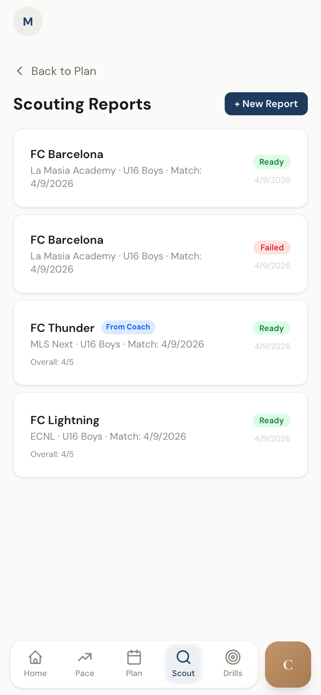
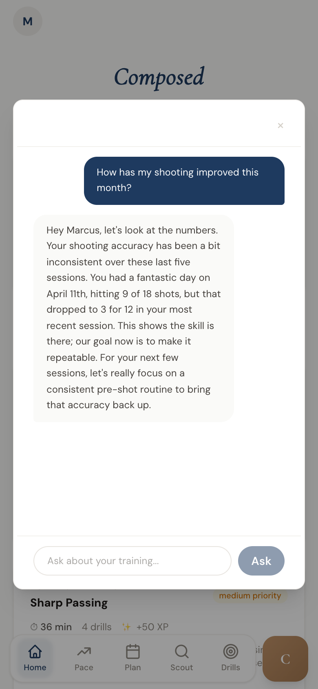

06 · The output
What the app actually looks like.
Captured from the running dev server. Warm stone background, navy ink, gold accents.
Player

Player

Coach

Coach

A web app that turns every solo training session — backyard, wall, empty park — into a position-weighted score.
Quick session form (one tap) or full logger — or a phone clip. Session drafts survive a dropped connection via IndexedDB, so a player can finish entering on the subway.
SessionLogger.jsx · QuickSessionForm.jsx · idbSessions feed the Pace calculator. Clips get H.264-compressed in the browser with ffmpeg.wasm, uploaded resumably via Tus, sampled into frames, and analyzed by Google's Gemini 2.5 Pro (with a Flash fallback) — returning time-coded stats: shots, on-target, foot usage, pass accuracy.
Squad Pulse — one scannable view showing who trained, who's stalling, who's accelerating. Three batched queries on the backend regardless of squad size. Coaches push assigned daily plans from the same screen.
CoachSquadDashboard.jsx · routes/roster.jsLSPT and LSST benchmarks (Loughborough passing + shooting) at baseline, week 2, and week 4. Scores percentile-ranked against FA England and US Soccer norms. Elite / Advanced / Competitive / Developing / Lower.
routes/blocks.js · utils/benchmarks.jsCoach generates a /r/:slug URL with a frozen snapshot. Parent opens it on any device — no app, no account, no login. One click revokes it and anyone who still has the URL sees a "no longer available" page, not a crash.
Pace is a 0–100 score computed from five sub-signals — shooting, passing, consistency, duration, load — weighted differently by position. Pick a role below and watch the math redistribute.
Enter an opponent's name. The generator classifies their playing style from prior matches, picks a warm-up session that counters it, and hands the coach a brief they'd otherwise write by hand the night before the game.
services/gamePlanGenerator.js · 451 lines · routes/scouting.js
Ask questions in plain English — "how has my shooting improved this month?" — and the answer is grounded in the sessions, matches, and numbers from the player's own account, not a generic template. The reply in the screenshot cites a specific session date and shot count.
components/AskComposed.jsx · routes/aiChat.js · @google/genai
Captured from the running dev server. Warm stone background, navy ink, gold accents.
Every dependency pulls its weight. Versions pinned. No framework-of-the-week.
Six position tables. Each row is five weights that sum to 1.0. Re-tune any row and the whole app re-ranks. The calculator is a pure function of <sessions, position> — cheap to test, easy to audit.
src/utils/pace.js · 237 linesFFmpeg compiled to WebAssembly. A phone clip is H.264-compressed before the first byte leaves the device — kinder to data plans, faster to upload. Tus makes dropped uploads resume instead of restart.
@ffmpeg/ffmpeg + @tus/server22-char base64url slug, frozen snapshot stored server-side, no-auth public route. Coach revokes and anyone who still has the URL sees a "no longer available" page — not a crash, not a 404.
server/routes/digests.js · 15 KBThe game-plan generator runs deterministic rules (opponent style detection, warm-up selection via a seeded PRNG) before falling back to Gemini. Same opponent → same warm-up.
services/gamePlanGenerator.js · 451 lines